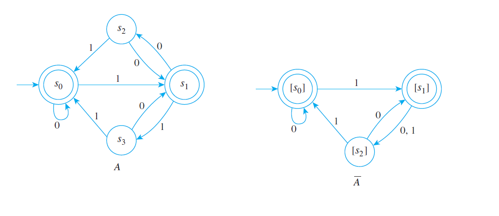

Relaciones de Equivalencia
Relaciones de Equivalencia
- El concepto de Relación de Equivalencia tiene gran importancia en las matemáticas. Por ejemplo, se usa para definir nuevos conceptos en términos de conceptos conocidos:
- Se definen los enteros en términos de los naturales y la suma de éstos, definiendo que dos pares de naturales \((a,b)\) y \((c,d)\) son equivalentes si \(a+d = b+c\).
- Se definen los racionales en términos de los enteros y la multiplicación entre éstos, definiendo que dos pares de enteros \((a,b)\) y \((c,d)\) son equivalentes si \(a \times d = b \times c\).
- Se definen los reales en términos de los racionales y sucesiones de ellos, definiendo que dos pares de sucesiones de racionales \( \lbrace q_n \rbrace \), \( \lbrace r_n \rbrace \) son equivalentes si su diferencia es una sucesión nula, i.e. \(lim(q_n-r_n) \rightarrow 0 \) cuando \( n \rightarrow 0 \).
- Se define el concepto de ángulo en términos de clases de equivalencia de arcos subtendidos en círculos concéntricos.
- Se define el concepto de dirección en términos de clases de equivalencia de líneas paralelas.
- También se usa para calcular en términos de operaciones básicas, o para simplificar entidades en
términos de entidades equivalentes más sencillas:
- Encontrar una máquina de estado finito con un número mínimo
de estados que realiza la misma tarea que una máquina de
estado finito dada. Por ejemplo, la siguiente figura
muestra dos autómatas que aceptan el mismo lenguaje:
 - Para encontrar la solución de ecuaciones lineales simultáneas en términos de operaciones elementales, tales como multiplicar la 2da ecuación por una constante y sumársela a la 1era ecuación. Haciendo esto con el sistema de dos ecuaciones
\[2x-3y=5\]
\[x+y=2\]
resulta en el sistema:
\[2x-3y=5\] \[-5y=1\]
Los dos sistemas son equivalentes en el sentido de que las soluciones de uno coinciden con las soluciones del otro.
×


Créditos
Escena original
| Diseño del contenido | Julio Arnoldo Prado Saavedra Víctor Manuel Amezcua Y Raz |
| Diseño funcional | Julio Arnoldo Prado Saavedra Víctor Manuel Amezcua Y Raz |
| Programación | Julio Arnoldo Prado Saavedra |
| Asesoría de programación | Víctor Manuel Amezcua Y Raz |
| Diseño gráfico | Ricardo López Gómez |
| Coordinación | Leticia Montserrat Vargas Rocha |
Adaptación
| Diseño funcional | Julio Arnoldo Prado Saavedra Oscar Escamilla González |
| Programación | Julio Arnoldo Prado Saavedra |
| Asesoría de programación | Oscar Escamilla González Leticia Montserrat Vargas Rocha |
| Diseño gráfico | Francisco Varela Fuentes |
| Coordinación | Leticia Montserrat Vargas Rocha |
Los contenidos de esta unidad didáctica interactiva están bajo una licencia Creative Commons Reconocimiento-NoComercial-CompartirIgual.
La unidad didáctica fue creada con Arquímedes, una herramienta de código abierto.
La unidad didáctica contiene escenas elaboradas con Descartes, una herramienta de código abierto.
LITE - UnADM 2014